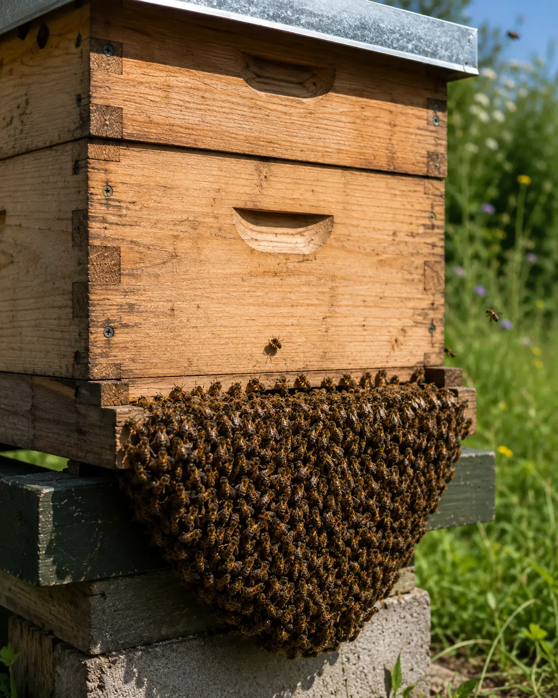

Normal colony behaviour
Bearding Bees – Why Bees Cluster Outside the Hive
Last updated: 15 August 2026

Bearding is the name beekeepers use when bees gather outside the hive in a hanging cluster, often around the entrance, underneath the floor or across the front of the brood box. It can look dramatic, especially to a new beekeeper, but it is often normal behaviour.
Colonies beard mainly to manage heat, humidity and space inside the hive. On warm evenings, a strong colony may move many bees outside so that airflow inside the brood nest is easier to control. This can help keep brood at a suitable temperature and give house bees more room to process nectar.
The important part is learning what normal bearding looks like and when it may be linked to overcrowding, poor ventilation or swarm preparation.
What is bearding?
Bearding occurs when bees leave the inside of the hive and hang together on the outside. The cluster often looks like a beard, which is where the name comes from. The bees are usually calm, settled and attached to the hive rather than flying in a cloud.
It is most common during warm weather, humid conditions, strong nectar flows or when the colony population is high. In many cases, the bees will move back inside later in the evening, overnight or when the weather cools.
Why do bees beard?
The most common reason is temperature regulation. Honey bees need to keep the brood nest within a suitable range, and a crowded hive full of bees, brood and nectar can become warm and humid. By moving some bees outside, the colony reduces congestion and improves airflow.
Bearding can also happen during a heavy nectar flow. When nectar is being ripened into honey, moisture has to be removed from the hive. Bees may fan at the entrance and cluster outside while the colony manages humidity inside.
Crowding can also contribute. A large colony with limited space may beard more often, especially if supers are full or the brood box is congested.
What bearding looks like
Normal bearding usually looks calm. Bees form a dense cluster on the outside of the hive, often hanging from the landing board, entrance, brood box face or underside of the floor. There is usually little fighting, no frantic movement and no large cloud of bees leaving the apiary.
The behaviour often appears in late afternoon or evening after a warm day. It may reduce overnight and return again the next day if the weather remains hot.
If the bees are calm and the colony otherwise appears strong and active, bearding alone is usually not a problem.
When bearding is normal
Bearding is usually normal during hot summer weather, particularly in strong colonies. It is also common when nectar is coming in heavily and the colony is working hard to ripen it.
A large colony may beard even when there is nothing wrong. If there is good entrance activity, normal foraging, no fighting, no signs of disease and no sudden swarm-like movement, observation is normally enough.
In the UK, this behaviour is most often seen during warm spells in late spring and summer, especially in full sun or sheltered apiary positions where hives heat up quickly.
Bearding vs swarming
Bearding is often confused with swarming, but the behaviour is different. In bearding, bees remain attached to the hive and usually return inside later. The colony is not necessarily leaving.
Swarming is different. A swarm normally involves a sudden increase in flying bees, a loud cloud of activity, and bees leaving with the queen before settling in a cluster away from the hive.
If you are seeing queen cells, a packed brood nest, reduced laying space or a sudden flying cloud of bees, check the swarm and queen guides rather than assuming it is only bearding.
Bearding vs overheating
Bearding is one way a colony helps manage heat, but extreme overheating is different. Normal bearding is usually calm and temporary. Overheating may involve heavy fanning, bees appearing distressed, very poor ventilation or the hive being exposed to intense sun with little airflow.
Overheating risk is higher where hives are crowded, poorly ventilated, in full sun all day, or short of space during a strong flow. Brood can suffer if the colony cannot regulate the hive properly.
If you suspect overheating, consider whether the colony has enough space, whether entrances are blocked, whether the hive is level and ventilated, and whether shade is needed during the hottest part of the day.
When to be concerned
Bearding becomes more important when it is combined with other signs. If bees are bearding heavily and not returning inside during cooler periods, check whether the colony is overcrowded or short of space.
You should also inspect at the next suitable opportunity if you see queen cells, reduced laying space, a very congested brood box, poor ventilation, distressed bees or unusual aggression. These signs may point to swarm preparation, heat stress or another colony management issue.
Bearding should be read alongside the whole colony picture, not treated as a problem by itself.
What should you do?
In most cases, do not rush to open the hive just because bees are bearding. Watch the colony first. If the bees are calm, the weather is warm and the cluster reduces later, it is probably normal behaviour.
At the next suitable inspection, check whether the colony has enough room. If supers are full or the brood nest is crowded, adding space may be needed. If the hive is in full sun and repeatedly struggling during hot weather, consider shade or improved ventilation.
If bearding is linked with queen cells or swarm signs, manage it as a swarm-control issue rather than a ventilation issue. The right action depends on what you find inside the hive.
How HiveTag can help
Bearding is easier to understand when you record the pattern over time. A colony that beards only during hot evenings may be behaving normally, while a colony that beards heavily alongside overcrowding or queen cells may need management.
HiveTag can help you log weather, colony strength, supers, queen cell checks and entrance behaviour, making it easier to decide whether bearding is normal seasonal behaviour or part of a wider issue.
Learn more about HiveTag.
Bearding Bees FAQ
Not usually. Bearding is often normal behaviour in warm weather, strong colonies or during nectar flows. It becomes more important if it is combined with overcrowding, queen cells, poor ventilation or signs of distress.
Bees may beard into the evening after a hot day, but the cluster often reduces or disappears as temperatures fall overnight.
It can. Bearding is often linked to heat and ventilation, but a crowded colony during a nectar flow may also need more space.
Usually not immediately. Observe first and inspect at the next suitable opportunity, avoiding the hottest part of the day or poor weather.